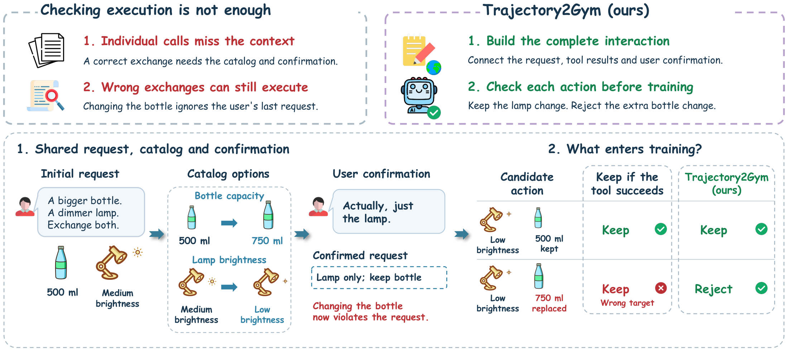
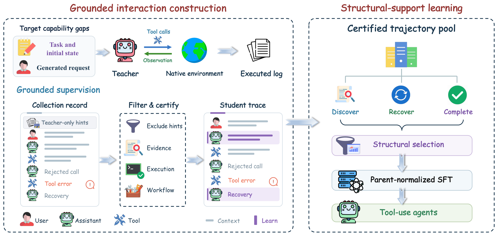
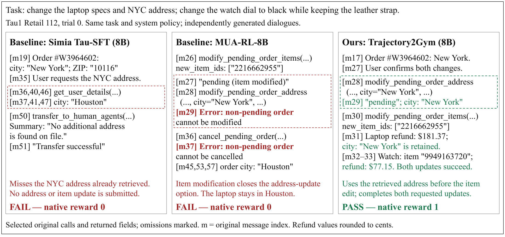

Construct interactions
Target under-supported capability paths and execute the resulting tasks in native environments. Make discovery, recovery and cross-step dependencies part of the experience.
Three-benchmark mean gain
Qwen3 · 1.7B to 30B-A3B
Parent-normalized training
Decision-Grounded Compositional Interaction Synthesis for Tool-Use Agents
Code, training scripts, examples, and tests are available on GitHub. ↗
A tool call can execute perfectly while ignoring the user's latest request. Training should preserve the dependencies that make a decision justified.
Both candidate exchanges can execute. Only one respects the confirmed request.
Grounding checks visible evidence; workflow certification checks the confirmed scope and required order.
Paraphrased schematic from Figure 1; the second candidate is constructed. This interaction illustrates supervision selection.
Construct under-supported interactions, certify decisions in their realized executions, and distribute learning across semantic trajectories.
Target under-supported capability paths and execute the resulting tasks in native environments. Make discovery, recovery and cross-step dependencies part of the experience.
Check visible evidence, execution validity and workflow completion. Keep authentic errors as context while supervising the grounded recovery that follows.
Select certified trajectories to preserve task breadth and cover capability paths. Balance repeated support with a scale-dependent target.
Give each semantic interaction equal training weight, independent of how many examples it renders into. Train with one epoch of supervised fine-tuning.

Paired comparisons against each Qwen3 initialization, under the same task population, native interface, decoding and scorer.
Pass@1 (%), equal-weight domain average. Higher is better.
| Qwen3 scale | Initialization | + Trajectory2Gym | Gain (pp) |
|---|---|---|---|
| 1.7B | 23.33 | 37.50 | +14.17 |
| 4B | 19.17 | 69.17 | +50.00 |
| 8B | 25.00 | 74.17 | +49.17 |
| 14B | 25.00 | 80.83 | +55.83 |
| 30B-A3B | 28.33 | 84.17 | +55.84 |
Author-reported manuscript results. Each task is run once. Scale-conditioned training views differ; these gains measure the complete recipe. Tau1 Airline uses a seen-task, transductive setting.
Parent normalization delivers the largest mean gain among the four stage-matched 8B ablations, with trajectories, rendered examples and target masks unchanged.
Structural selection covers more canonical paths than random selection at the same 14,819-parent budget and equal target tokens.
Each matched ablation is a single run. A few-point change is directional, and gains from different stages are not additive. The targeted-expansion pair changes candidate supply without fixing the target-token budget. The support-depth sensitivity experiment changes both support and data volume. See the full paper for protocols and limitations.
On the paper's Retail workflow, the address must change while the order is pending, before editing its items. Correct individual calls still need the right sequence.

Explore the paper, implementation, training workflow, and project materials.
BibTeX for the project manuscript.
@misc{hu2026trajectory2gym,
title = {Trajectory2Gym: Decision-Grounded
Compositional Interaction Synthesis
for Tool-Use Agents},
author = {Hu, Yihao and Wen, Zhihao and
Lin, Yitong and Lu, Siyuan and Wang, Pan and
Wu, Wei and Yang, Jiang-Ming and Lin, Tao},
year = {2026},
howpublished = {Project manuscript},
url = {https://yihaohu0118.github.io/Trajectory2Gym-page/}
}